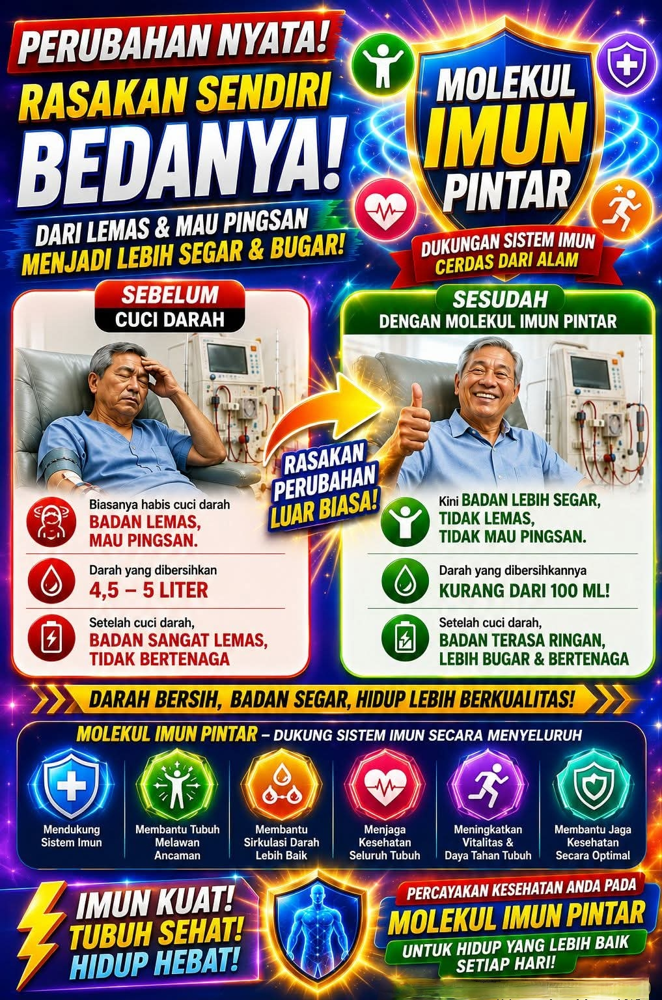
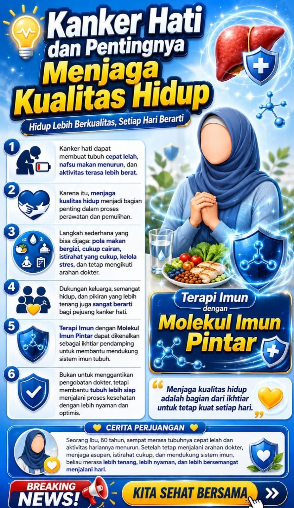

Dukungan Sistem Imun Cerdas dari Alam
Transfer Factor — Kecerdasan Imun Alami
Ribuan orang Indonesia mengalami ini setiap hari. Kamu tidak sendirian.
Tubuh cepat capek, tidak bertenaga meskipun sudah cukup istirahat. Produktivitas menurun drastis.
Gampang kena flu, batuk, atau infeksi. Sistem imun yang lemah membuat tubuh rentan terhadap penyakit.
Cuci darah, kanker, diabetes — kondisi berat yang menguras energi, biaya, dan harapan.
Anak-anak, pasangan, atau orang tua di rumah terus bergantian sakit — biaya kesehatan membengkak.
Konsumsi obat kimia terus-menerus berdampak buruk jangka panjang. Ada solusi lebih alami.
Bertahun-tahun menunggu momongan, sel telur tidak sehat, atau kandungan bermasalah.
Produk berbasis Transfer Factor dari 4Life — solusi imun cerdas dari alam
Transfer Factor adalah molekul komunikasi imun yang ditemukan di dalam kolostrum (susu pertama sapi) dan kuning telur. Molekul ini bertugas "mengajari" sel imun tubuh cara mengenali, melawan, dan mengingat ancaman penyakit.
Bayangkan seperti panduan pintar bagi sistem imun tubuhmu — memberikan memori, kecepatan, dan ketepatan dalam melawan ancaman.
Yang akan kamu rasakan ketika sistem imunmu bekerja optimal
Mendukung sistem imun secara menyeluruh — dari deteksi hingga penghancuran ancaman penyakit.
Tubuh lebih berenergi, stamina meningkat, dan tidak mudah lelah dalam menjalani aktivitas sehari-hari.
Membantu memperlancar peredaran darah sehingga nutrisi dan oksigen tersebar ke seluruh tubuh.
Membantu menjaga kesehatan tubuh secara keseluruhan dari dalam ke luar secara alami.
Lebih tahan terhadap perubahan cuaca, virus, bakteri, dan kondisi lingkungan yang tidak menentu.
Mempercepat proses pemulihan tubuh dari sakit dan mendampingi proses terapi medis.
Hasil nyata yang dirasakan oleh pasien hemodialisis (cuci darah)

Volume darah yang perlu dibersihkan setiap sesi hemodialisis. Proses lama, tubuh sangat lemas setelahnya.
Volume darah kotor berkurang drastis. Tubuh terasa lebih segar dan tidak terlalu lemas pasca cuci darah.
⚠️ Disclaimer: Hasil dapat berbeda-beda pada setiap individu. Suplemen ini bukan pengganti pengobatan medis. Tetap konsultasikan kondisi Anda dengan dokter yang menangani.
Molekul Imun Pintar hadir untuk berbagai kondisi kesehatan spesifik
*Tetap lanjutkan terapi medis dari dokter
*Konsultasi dengan dokter onkologi Anda
*Evaluasi ke dokter kandungan setiap 6 bulan

Transfer Factor tidak mengobati kanker secara langsung, namun membantu sistem imun tubuh menjadi lebih kuat dan siap dalam mendampingi proses terapi medis yang sedang dijalani.
Banyak pengguna melaporkan tubuh terasa lebih bertenaga, nafsu makan meningkat, dan kualitas hidup secara keseluruhan membaik selama mengonsumsi Transfer Factor bersama terapi dokter.
⚠️ Disclaimer: Suplemen ini bukan pengganti pengobatan medis. Selalu konsultasikan kondisi Anda dengan dokter spesialis yang menangani.
Dosis yang dianjurkan untuk program kesuburan / hamil
| Produk | Dosis |
|---|---|
| TF Plus | 3 × 2 kapsul / hari |
| TF Tri-Factor | 3 × 2 kapsul / hari |
| Produk | Dosis |
|---|---|
| TF Plus | 3 × 2 kapsul / hari |
| TF Tri-Factor | 3 × 3 kapsul / hari |
| TF BeleVie (Hari 1–6) | 3 × 2 kapsul / hari |
| TF BeleVie (Hari ke-7) | 3 × 4 kapsul / hari |
⚠️ Disclaimer: Dosis di atas adalah panduan umum dari distributor. Konsultasikan selalu dengan dokter kandungan Anda sebelum memulai program suplemen apapun.
Kisah nyata dari para pengguna Molekul Imun Pintar
"Suami saya pasien cuci darah sudah 3 tahun. Setelah rutin konsumsi Transfer Factor, darah kotornya berkurang drastis dan dia tidak selemas dulu setelah cuci darah. Alhamdulillah."
"Sudah 5 tahun program hamil belum berhasil. Setelah konsumsi rutin TF Plus dan BeleVie, Alhamdulillah 8 bulan kemudian kami dikaruniai momongan. Tidak menyangka secepat ini."
"Sebagai pekerja kantoran, dulu saya gampang banget kena flu. Semenjak konsumsi ini, daya tahan tubuh meningkat drastis. Sudah 8 bulan tidak pernah absen kerja karena sakit."
"Mama saya divonis kanker hati stadium 2. Transfer Factor bukan obatnya, tapi mama jadi lebih kuat jalani kemoterapi. Nafsu makannya membaik dan semangatnya kembali."
"Anak-anak saya dulu sering bergantian sakit. Semua saya kasih Transfer Factor sesuai dosis. Sekarang jarang ke dokter, badan mereka lebih fit dan energik setiap hari."
"Saya juga jadi reseller setelah merasakan manfaatnya sendiri. Penghasilan tambahan lumayan, dan saya bisa bantu orang lain juga. Dua keuntungan sekaligus!"
Jangan tunda lagi. Investasi terbaik adalah kesehatan diri dan keluarga. Hubungi kami sekarang dan mulai perjalanan hidup sehatmu.